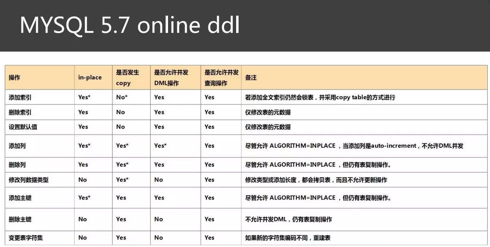
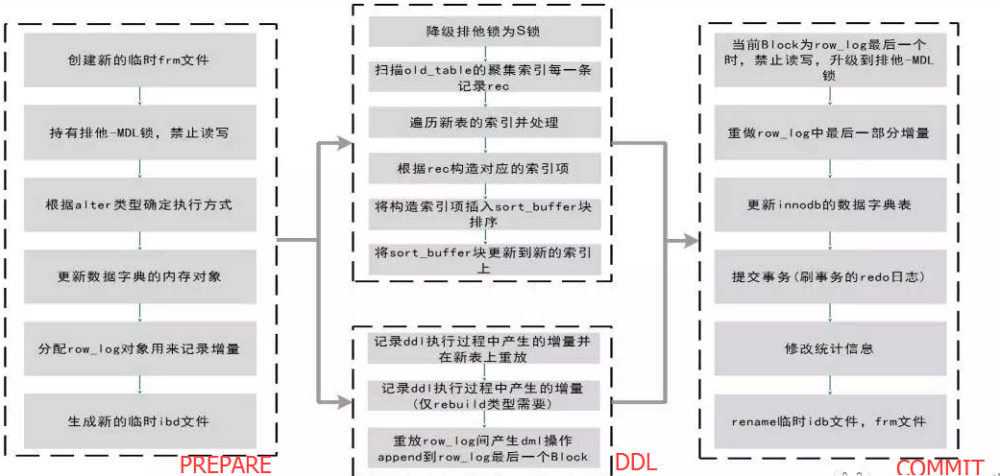
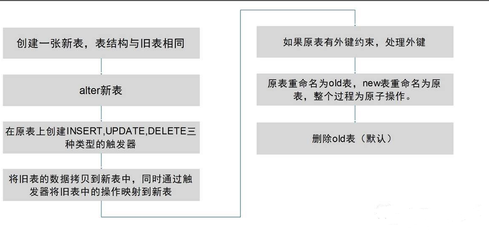

Mysql 013表结构变更
当前mysql最大的记录数是7亿级
Executing:
|
|
杀死mysql连接
|
|
|
|
虽然 MySQL 5.6 支持了在线 DDL 操作，不过还是有些需要注意的问题，
最为重要的就是参数 innodb_online_alter_log_max_size 的配置。
在进行 DDL 操作时会保存操作时间内产生的日志，这与 facebook OSC 的临时表，但是其保存在内存中，
而该内存的大小由参数 innodb_online_alter_log_max_size 定义，默认大小为 128M。
如果产生的日志超出该容量大小，则会抛出
根据测试经验，128M 通常在一个活跃的线上环境中是不够的，通常 512M 是比较推荐的值。
好在该参数是动态的，可以基于会话级别进行调整。
另外个人的体会是，在进行在线索引添加操作时，数据库性能会有 20～30%的下降。
另一个小技巧是使用
ALTER TABLE … LOCK=NONE 来强制使用在线 DDL 操作，若操作不支持，则会抛出异常，
如：
|
|
ALGORITHM 子句用来指定执行 DDL 采用的方式，可取值为 DEFAULT、INPLACE、COPY
ALGORITHM = DEFAULT| INPLACE| COPY
LOCK 子句描述持有的锁类型来控制 DML 的并发，取值 DEFAULT、NONE、SHARED、EXCLUSIVE
LOCK = DEFAULT| NONE | SHARED | EXCLUSIVE


Percona 工具 PT-OSC(Percona Toolkit Online Schema Change) PT-OSC 原理如下图：
